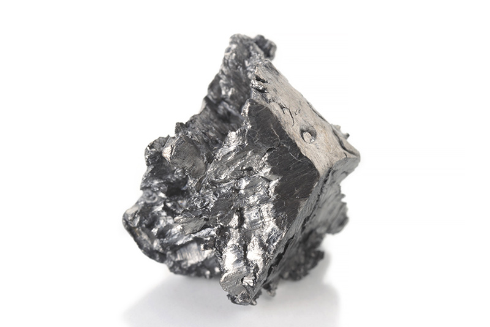

Диспрозий
Диспро́зий (химический символ — Dy, от лат. Dysprosium) — химический элемент 3-й группы (по устаревшей классификации — побочной подгруппы третьей группы, IIIB) шестого периода периодической системы химических элементов Д. И. Менделеева, с атомным номером 66.Относится к семейству лантаноидов. Простое вещество диспрозий — это редкоземельный серебристо-серый металл.

В 1878 году было обнаружено, что в рудах эрбия содержатся оксиды гольмия и тулия. В 1886 году в Париже французский химик Поль Эмиль Лекок де Буабодран, работая с оксидом гольмия, отделил от него оксид диспрозия. Его процедура выделения диспрозия включала растворение оксида диспрозия в кислоте, а затем добавление аммиака для осаждения гидроксида. Он смог изолировать диспрозий от его оксида только после более чем 30 попыток. После успеха он назвал элемент диспрозием от греческого диспрозитос (др.-греч. δυσπρόσιτος), что означает «трудно получить». Элемент не был выделен в относительно чистой форме до тех пор, пока в начале 1950-х годов Фрэнк Спеддинг из Университета штата Айова не разработал методы ионного обмена.Из-за его применения в постоянных магнитах, используемых для ветряных турбин, утверждалось, что диспрозий будет одним из главных объектов геополитической конкуренции в мире, в сфере возобновляемых источников энергии. Но эта точка зрения подверглась критике за то, что она не учла, что большинство ветряных турбин не используют постоянные магниты, а также за недооценку силы экономических стимулов для расширения производства.
Диспрозий – серебристо-серый металл, до 1384 °C устойчива α-модификация с гексагональной плотноупакованной решёткой; tпл 1407 °C, tкип 2567 °C, плотность 8551 кг/м3. Конфигурация внешних электронных оболочек 4f105s2p66s2. Ферромагнетик, точка Кюри 88,3 К. В соединениях проявляет степень окисления +3. Металлический диспрозий медленно окисляется на воздухе при 20 °C. Диспрозий получают при переработке руд, содержащих редкоземельные элементы. Фольгу из диспрозия используют в нейтронной радиографии; оксид Dy2O3 входит в состав некоторых люминофоров и специальных стёкол.